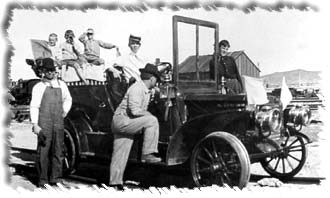

Pacific Desert Lines layout. GIF format.John Allen's Timesaver for N scale using no. 6 switches. GIF format.
Nn3 data and drawings (yes, I am that crazy) along with other narrow gage info will be put on my narrow gauge site: SLIM RAILS.
Nothing much there yet, but things are in the works.
My current project is for the mighty 2-10-10-2 Santa Fe Mallet #3000. I am building it in N scale (don't hold your breath, it probably will take a couple of years the way it's been going). I am working off of the plans published in MR a while back, but will modify them to fit two ConCor Decapod mechanisms.
If you have comments, suggestions on what you would like to see
or data you might like, you can email me at:
Rick Blanchard - rick@urbaneagle.com


--To da data.--